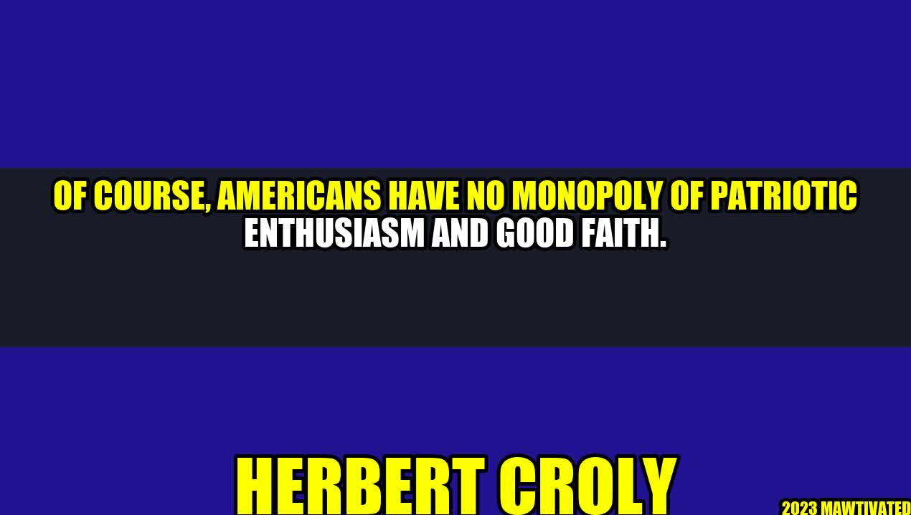

The Power of Patriotic Enthusiasm

"Patriotism is not short, frenzied outbursts of emotion, but the tranquil and steady dedication of a lifetime." -Adlai Stevenson
There is a certain fire that burns within the hearts of individuals who are fiercely patriotic. It is the kind of fire that ignites a sense of pride, honor, and duty to their country. This fire burns within many nations, but it seems that Americans have a particular knack for expressing their patriotism with enthusiasm and gusto, much to the admiration of many.
Let me share with you an inspiring story that left a lasting impact on me.
One of my closest friends, Maya, is an army veteran who had fought in Iraq. It had been a grueling experience for her as she was away from her family for an extended period. However, what stuck with her the most was witnessing the unwavering patriotism that her fellow soldiers displayed when they were in the thick of battle. Even when bombs were exploding around them and bullets whizzed by their heads, they remained resolutely committed to defending their country and their comrades.
The Legacy of Herbert Croly
Herbert Croly was not only an influential political philosopher but also an enthusiastic American patriot. The author of "The Promise of American Life," Croly championed a strong central government and an engaged citizenry who would work tirelessly to attain American greatness.
His unwavering patriotism and commitment to America inspired many, including President Franklin D. Roosevelt, who cited Croly as one of his favorite writers. Croly's legacy lives on as his ideas continue to inspire generations of Americans to this day.
Highlighting the Power of Patriotic Enthusiasm
- When my friend, John, lost his father in the 9/11 tragedy, he found solace in the patriotic displays that emerged across the country. American flags waved in unison as citizens united in support of those affected by the tragedy.
- My neighbor, Bob, is an army veteran who regularly participates in flag-flying events across the country. As he raises each flag, Bob maintains that he feels a deep sense of pride and commitment to his country.
- One of my colleagues, Sarah, is a teacher who regularly encourages her students to embrace patriotic values. She believes that teaching young people to be proud of their country is essential in creating a future generation that is committed to building a better America.
The Power of Patriotism in Action - Examples of American Patriotism
- The annual Fourth of July celebrations bring together Americans from all walks of life to celebrate the birth of their country. Patriotic parades, fireworks displays, and cookouts are just a few ways Americans express their love of country.
- The United States Armed Forces is a shining example of patriotic commitment. The men and women who serve in the military put their lives on the line to protect America and its citizens.
- American students regularly participate in programs such as the National History Day contest. These programs encourage young people to research and explore American history and to develop a deeper appreciation for the sacrifices of those who have come before them.
The Power of Patriotism in Daily Life - Practical Tips
- Hang the American flag outside your home or office to show your support for your country.
- Participate in local patriotic events, such as parades and fireworks displays.
- Encourage your children to learn more about American history. Take them to museums and historical sites to help them develop a deeper appreciation for their country.
Conclusion
- American patriotism is a powerful force that inspires citizens to work tirelessly to build a better country.
- Herbert Croly's legacy serves as a reminder that America's success is dependent on committed citizens who work to uphold and strengthen American values.
- Practical tips, such as hanging the American flag and encouraging children to learn more about America's history, can help individuals grow their patriotism and strengthen their commitment to their country.
Hashtags and SEO Keywords
- #PatrioticEnthusiasm
- #AmericanPride
- #HerbertCroly
- #AmericanValues
- #NationalHistoryDay
- #FourthofJuly
Article Category
Culture and Society
Curated by Team Akash.Mittal.Blog
Curated by Team Akash.Mittal.Blog
Share on Twitter Share on LinkedIn